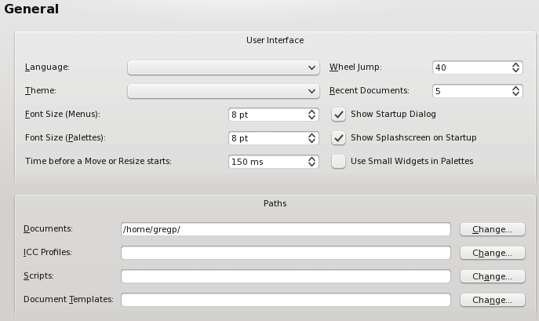
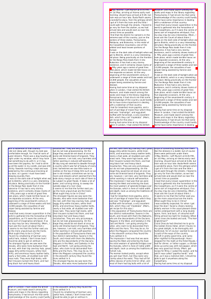
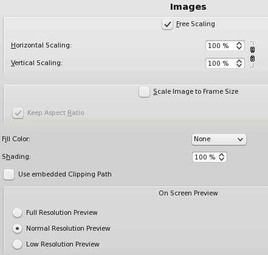
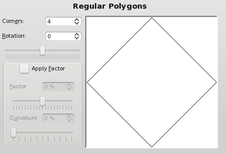
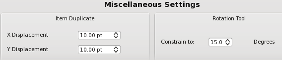
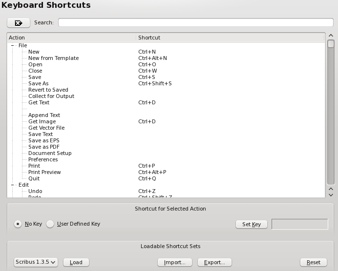

Hier sehen Sie ein Beispiel für ein doppelseitiges Dokumentlayout mit einer ersten rechten Seite. Wenn Sie diese Datei auf einem Bürodrucker ausdrucken, wird jede Seite einzeln gedruckt.
Im Datei-Menü finden Sie zwei ähnliche Einträge, nämlich Dokumenteinstellungen und Allgemeine Einstellungen. Jeder der beiden startet einen Dialog zum Ändern verschiedener Einstellungen und des Verhaltens von Scribus:
Die Sprache, in der Scribus startet, ist normalerweise die des Betriebssystems bzw. der Desktop-Umgebung. Wenn für diese keine Scribus-Übersetzung zur Verfügung steht, startet Scribus in amerikanischem Englisch. Für Deutsch gibt es drei Sprachvarianten: reformierte, herkömmliche und Schweizer Orthographie. Die Sprache der Benutzeroberfläche wirkt sich auch auf andere Bereiche aus, so auf die Sprachversion dieser Online-Hilfe, der Silbentrennung, der Rechtschreibprüfung, des Beispieltextes u.v.m. Der Wechsel der Sprachversion erfordert keinen Neustart von Scribus, sondern wird sofort wirksam.
Das Thema ist zunächst das Ihres Betriebssystems bzw. Ihrer Desktop-Umgebung, aber hier können Sie auch ein anderes für Scribus auswählen. Dabei ist die Auswahl je nach Betriebssystem verschieden. Sie können auch die Schriftgröße in Menüs und Dialogen ändern, und die übrigen Einstellungen im oberen Teil des Reiters sollten selbsterklärend sein.
Die verschiedenen »Pfade« bezeichnen einige Standardverzeichnisse, die Scribus zusätzlich zu den voreingestellten oder statt dieser verwendet. Der Pfad zu Scripts legt das Verzeichnis fest, in dem Scribus standardmäßig nach Python-Programmen sucht, wenn Sie Script > Script ausführen in der Menüleiste wählen.
|  |
In den Allgemeinen Einstellungen legen Sie im »Dokument«-Reiter fest, welche Werte für Dokumente gelten sollen, wenn Sie Datei > Neu klicken. In den Dokumenteinstellungen tun Sie dasselbe für das aktuelle Dokument. Die Einstellungen unter »Seitenformat« sollten selbsterklärend sein. Zusätzlich zur (von den Spracheinstellungen abhängigen) Standardgröße und benutzerdefinierten Abmessungen bietet Scribus eine große Zahl an standardisierten Papierformaten. Die Optionen for das »Dokumentlayout« haben bei manchen Anwendern für Irritationen gesorgt. Hier legen Sie fest, wieviele Seiten nebeneinander angelegt werden, was auch für die PDF-Ausgabe wichtig ist. Sie legen nicht fest, wie eine einzelne Seite aufgeteilt wird, d.h. wenn Ihr Seitenformat A4 ist und Sie »4fach gefaltet« wählen, werden immer vier A4-Seiten nebeneinander angeordnet und nicht eine A4-Seite in vier Bereiche unterteilt. »Doppelseite« ist das typische Layout für ein Buch oder eine Zeitschrift, weshalb hier die Voreinstellung für die erste Seite »Rechte Seite« lautet (denn die erste Seite ist so gut wie immer eine rechte Seite).
|  Hier sehen Sie ein Beispiel für ein doppelseitiges Dokumentlayout mit einer ersten rechten Seite. Wenn Sie diese Datei auf einem Bürodrucker ausdrucken, wird jede Seite einzeln gedruckt. |
Um Unterreiter »Ränder« finden Sie sogenannte Standard-Layouts, die allerdings nicht für ein Einzelblatt-Dokumentlayout zur Verfügung stehen, weil sie in diesem Fall sinnlos wären. Es handelt sich dabei um mit mathematischen Methoden berechnete Seitenränder, die sich im Laufe der Jahrhunderte vor allem im Buchdruck bewährt haben. Nachfolgend sehen Sie die Unterschiede zwischen den verschiedenen Modellen, demonstriert an der rechten Seite eines doppelseitigen Dokumentes:
 Gutenberg |  Zeitschrift |  Fibonacci |  Goldener Schnitt | Neunerteilung |
Bitte beachten Sie, daß Änderungen des Seitenformates und des Standardlayouts in einem existierenden Dokument nur auf neue Seiten angewandt werden. Um diese Einstellung für bereits vorhandene Seiten zu ändern, müssen Sie jede Seite einzeln markieren und dann den Menüpunkt Seite > Eigenschaften der Seite bearbeiten aufrufen.
Im Reiter »Anschnitt« legen Sie die Beschnittzugabe nach den Vorgaben Ihrer Druckerei fest.
In diesem Bereich können Sie weit mehr als nur Hilfslinieneinstellungen treffen. Hilfslinien können entweder über oder unter Dokumentinhalten liegen. Unter »Einrasten« legen Sie fest, ab welcher Entfernung Objekte von Hilfslinien »eingefangen« werden, wenn die entsprechende Funktion aktiviert wurde, und wie weit der Mauszeiger von Objektanfassern entfernt sein darf, um sie zu bewegen. Damit Änderungen unter »Einrasten« wirksam werden, müssen Sie Scribus neu starten.
Weiterhin legen Sie hier die Farben von Hilfslinien, Seitenrandlinien, des Seitenrasters und des Grundlinienrasters fest, außerdem die Werte für das Grundlinienraster:
 |
Standardmäßig werden Hilfslinien und Seitenrandlinien angezeigt, aber dies können Sie hier ändern. Die beiden Seitenraster (Gitter) werden in der Voreinstellung nicht angezeigt – in der Abbildung rechts wurden die Standardfarben geändert, so daß Sie die Unterschiede zu den Standardeinstellungen sehen können: Seitenränder in rot, Seitenrandlinien in blau, das große Seitenraster in grün und das kleine in magenta. Im unteren Bereich des Dialogs legen Sie die Einstellungen für das Grundlinienraster fest. Über letzteres erfahren Sie mehr im Kapitel über Textrahmen. |
 |
Hier finden Sie die Standardeinstellungen für verschiedene typographische Funktionen, nämlich die Werte für hochgestellte und tiefgestellte Zeichen, Unter- und Durchstreichungen, künstliche Kapitälchen und den automatischen Zeilenabstand. Diese Angaben sind alle in Prozent, da Sie sich auf die jeweilige Schriftgröße beziehen.
Beachten Sie, daß der Prozentwert unter »Automatischer Zeilenabstand« den Wert zusätzlich zur Schriftgröße bezeichnet, 20% also eigentlich 120% bedeutet.
 |
Im Reiter »Werkzeuge« können Sie die Standardeinstellungen für die verschiedenen Rahmentypen ändern. Was sie im einzelnen bedeuten, wird deutlich, wenn Sie die Abschnitte zu den Rahmentypen gelesen haben. Darüber hinaus finden Sie hier Einstellungen zu Vergrößerungsstufen und zu diversen objektbezogenen Aktionen.
 |
 |
 |
 |
 | |

|  |
Siehe dazu den Abschnitt Silbentrennung.
Siehe dazu die Dokumentation zur Schriftenverwaltung. Diese sollten Sie unbedingt lesen, um Probleme in Druckerei zu vermeiden.
Siehe dazu die Abschnitte über die Druckwerkzeuge.
Siehe dazu die Dokumentation zum Farbmanagement.
Siehe dazu die PDF-Dokumentation.
Außer zum Speichern zusätzlicher Informationen über ein Objekt ist dieser Teil des Dialogs v.a. im Zusammenhang mit dem Erstellen eines Inhaltsverzeichnisses von Nutzen.
Diese beiden Unterdialoge sind aufeinander bezogen, und eine der beiden Funktionen finden Sie hier beschrieben.
|  |
Hier sehen Sie die zugeordneten Tastaturkürzel, die sich jederzeit ändern lassen. Außerdem können Sie auch neue Kürzel eingeben. Neu festgelegte Kürzel können Sie in eine XML-Datei exportieren, die sich auf einem anderen Computer benutzen läßt. Die Dateiendung einer solchen Datei lautet *.ksxml. Es handelt sich dabei um eine Unicode-Datei, die plattformübergreifend funktionieren sollte, abgesehen davon, daß Macs eine Options- und eine Metataste besitzen, während Linux, UNIX, OS/2, eComStation und Windows alle dieselben PC-Tastaturen verwenden.
In Bibliotheken speichern Sie Objekte aller Art, die Sie häufiger benötigen. Bibliotheken können entweder mit einem Dokument oder als separate Dateien gespeichert werden, die von anderen Dokumenten oder Anwendern genutzt werden. Die Endung einer solchen Datei ist *.scs. Hier können Sie festlegen, ob Objekte aus der Zwischenablage automatisch in die Standardbibliothek kopiert werden, ob diese auch nach einem Neustart zur Verfügung stehen sollen und wieviele Objekte eine einzelne Bibliothek enthalten darf.
Die meisten Einträge in hier dürften selbsterklärend sein. Je nachdem wie groß Ihr Monitor ist, können Sie hier Ihre Arbeitsfläche anpassen. Wenn Sie beispielsweise mit einem sehr großen Monitor arbeiten, können Sie Scribus ein Dokument in Originalgröße anzeigen lassen. Den Vergrößerungsfaktor können Sie unter Werkzeuge > Vergrößerung einstellen.
 |
Im Reiter »Farben« können Sie die Farben für bestimmte Bildschirmfeatures wie Seitenrandlinien, oder Steuerzeichen festlegen. In den Dokumenteinstellungen können Sie hier nur die »Füllfarbe« einer Seite, d.h. die Bildschirmfarbe einer Seite auswählen. Diese Farbe wird nicht gedruckt und dient dazu, den Druck auf farbigem Papier zu simulieren.
Hier stellen Sie den Speicherort für Ghostscript und andere externe Programme ein. Wenn Sie Ghostscript vor Scribus installiert haben, findet Scribus das Programm normalerweise automatisch. Falls Sie eine Fehlermeldung erhalten, die besagt, daß EPS-Dateien nicht importiert werden können, obwohl Sie Ghostscript installiert haben, können Sie hier das richtige Verzeichnis eingeben.
Linux, UNIX, OS/2, eComStation, Haiku und Windows:
 |
Der Bildschirmschnappschuß wurde unter Linux erstellt und gilt prinzipiell auch für andere UNIX-Systeme. Siehe auch die Informationen zu Windows, Haiku sowie OS/2 und eComStation. Zusätzliche Informationen zu Ghostscript finden Sie hier.
Mac OS X
 |
Hier sehen Sie die empfohlenen Einstellungen für Mac OS X, vorausgesetzt, Sie haben das Ghostscript-Framework korrekt installiert.
Bildbearbeitungsprogramm
Sie sind nicht auf GIMP beschränkt, sondern können jedes andere Bildbearbeitungsprogramm wie Krita oder Photoshop aus Scribus heraus starten. Weil GIMP jedoch das populärste Open-Source-Bildbearbeitungsprogramm ist, finden Sie es voreingestellt.
Webbrowser
Hier legen Sie fest, welchen Browser Sie verwenden möchten, wenn Sie einen externen Link in dieser Dokumentation anklicken oder auf externe Ressourcen aus dem Hilfe-Menü zugreifen.
Render Frames
Siehe dazu den Abschnitt über Renderrahmen.
 |
Hier finden Sie verschiedene textbezogene Einstellungen, die selbsterklärend sind.
Dieser Bereich dient nur zu Ihrer Information. Sie können hier u.a. feststellen, ob sich alle Plug-ins aktivieren ließen. Wenn letzteres nicht der Fall ist, kann dies an einer fehlenden Programmbibliothek liegen.
Siehe dazu die Dokumentation zur Umbruchkontrolle.
Siehe dazu die Scripter-Dokumentation.
Siehe dazu den Abschnitt über die Dokumentinformation.
Die Konfigurationsdateien von Scribus sind in einem versteckten Verzeichnis namens .scribus gespeichert. Dieses befindet sich je nach Betriebssystem an einem anderen Ort:
/home/username/.scribusUser/username/.scribusX:\SCRIBUS-1.4.x-OS2-date\scribus\.scribus/boot/home/config/settings/Qt/.scribusC:\Dokumente und Einstellungen/username/.scribusInnerhalb dieses Verzeichnisses gibt es u.a. die Dateien scribus140.rc, checkfonts.xml (in der die Einstellungen für Schriften gespeichert sind) sowie prefs140.xml. Alle diese Dateien sind XML-Dateien, so daß Sie deren Inhalt mit einem Texteditor betrachten und bearbeiten können. Wenn Sie Python installiert haben, finden Sie dort auch eine Datei mit dem Namen scripter.rc, in der die zuletzt verwendeten Scripts gespeichert werden. Darüber hinaus gibt es zusätzliche Unterverzeichnisse, die weitere Scribus-Daten enthalten. Wenn sich Scribus plötzlich unerwartet oder fehlerhaft verhält, kann es hilfreich sein, das Verzeichnis .scribus umzubenennen, aber es nicht zu löschen. Siehe dazu die Informationen zur Problembehebung.
Siehe auch